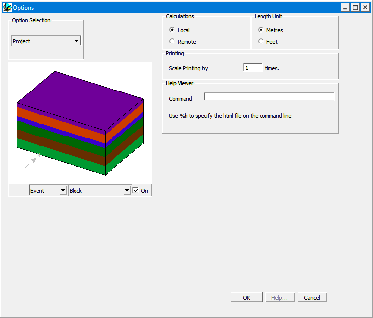

Project options
This window, which may be accessed via the Project Options item in the Edit menu, provides some overall controls for the program.

| GROUP | NAME | FUNCTION |
|---|---|---|
| Help Viewer | Command | Path of Web browser used to view help files (followed by %h) |
| Printing | Scale | Multiplying factor to scale up printing to allow exact scaling of images, or when printer drivers don't behave |
NoteThe Help Viewer command is not used by the current version: in-program help has been replaced by this online documentation.
Noddy · open source under the MIT licence · Loop3D/noddy_qt